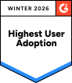
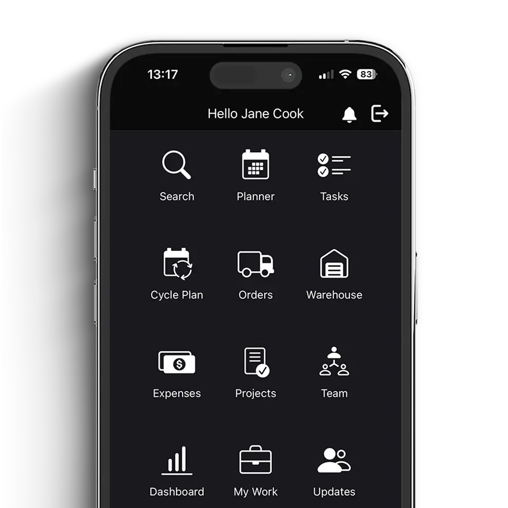

HCP Yönetimi
Hızlı müşteri içgörüsü.
Reçete yazan sağlık profesyonellerini segment değerine göre önceliklendirin.
Inception CRM, HCP etkileşimini hızlandıran, 4–12 haftada hayata geçen ve büyüdükçe ölçeklenen farma-odaklı bir CRM platformudur. Şeffaf, sade, satıcı bağımlılığı yok.



Karmaşık kurumsal CRM'ler vaatlerle başlar, takvimlerle biter. Biz başka bir hikaye yazıyoruz: sade, hızlı ve farmaya özel.
Saha ekibinin her temas noktası için tasarlanmış, birbiriyle konuşan modüller.
Hızlı müşteri içgörüsü.
Reçete yazan sağlık profesyonellerini segment değerine göre önceliklendirin.
Akıllı zaman yönetimi.
Bölgeleri sadece hacme değil, gerçek potansiyele göre dengeleyin.
E-posta yerine işbirliği.
Ekipler ve paylaşılan hesaplar arasında görevleri koordine edin.
Müşterinizle her yerde.
Eklenti gerekmeden CRM içinden sanal HCP görüşmeleri.
Onaylı içeriği güvenle paylaşın.
Onaylı içerikleri ajans olmadan oluşturun, sunun, paylaşın.
Projeler, sözleşmeler, etkinlikler.
Etkinlik ve sözleşmeler için uyumlu otomatik iş akışları.
Yaşam bilimleri için gelişmiş.
Her satış noktasında sipariş oluşturun, takip edin.
Uyumlu numune ve stok.
Numune ve promosyon stoklarını tam uyumlulukla yönetin.
Hareket halinde raporlayın.
Temsilcilerin saha harcamalarını anlık yakalayın.
Panolar ve raporlar.
Saha aktivitelerini ve müşteri içgörülerini gerçek zamanlı izleyin.
6–24 ay süren kurumsal projeler yerine 4–12 hafta içinde canlıya alın. Pazara hızlı çıkış, hızlı geri dönüş.
Dış danışman partner zincirine gerek yok. CRM'i kendi ekibinizle yönetin, maliyetlerinizi düşürün.
Senkronizasyon gecikmesi olmayan online-first CRM. Saha temsilcisi etkileşimi anında merkeze yansır.
Tek paket, her şey dahil. Sürpriz eklenti faturası yok, satıcı bağımlılığı yok, veriniz size ait.
"Sezgiselliği ve kullanım kolaylığı, teknik yeterliliklerinden bağımsız olarak ekibimizin tüm üyeleri için erişilebilir kılıyor.
"Bu yazılımın arkasındaki insanlar farma pazarının karmaşıklığını anlıyor ve sürekli değişen ortama hızla adapte oluyorlar.
"İşin tüm değişimleri ve ihtiyaçları, tüm kullanıcılar için çevik, hızlı ve etkili bir programa yansıyor.
"Tüm kilit metrikleri izlemek ve ölçmek için hayati analizler elde edip raporlar oluşturabiliyoruz.
"Inception CRM bana farklı seviyelerde hızlı, doğru ve objektif bilgi veriyor; satış ekibimizi doğru değerlendirmemi sağlıyor.
"Çok uyarlanabilir, amaca özel ve uygun. Sade ama etkili, son derece kullanıcı dostu. Ekiple çalışmak bir zevk.
Müşteri etkileşimini nasıl iyileştireceğinizi ve satış ekibi performansını nasıl artıracağınızı kişiselleştirilmiş bir demoda gösterelim.